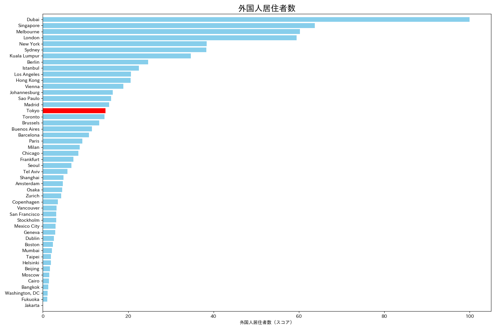
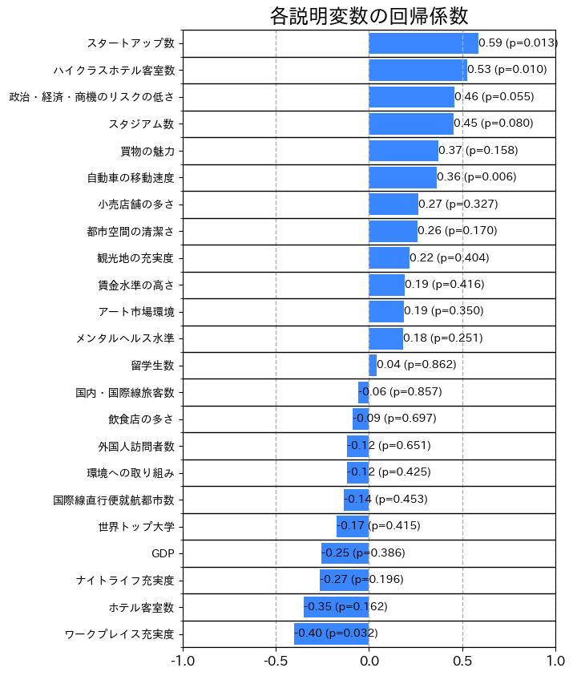
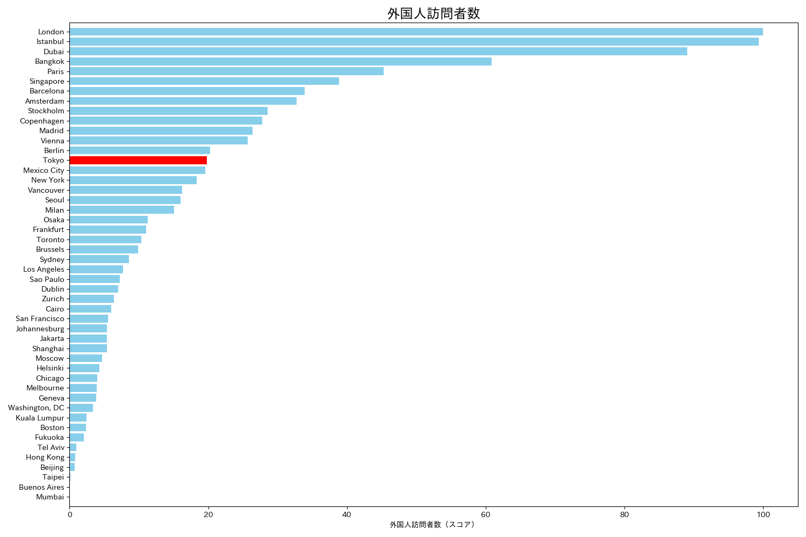
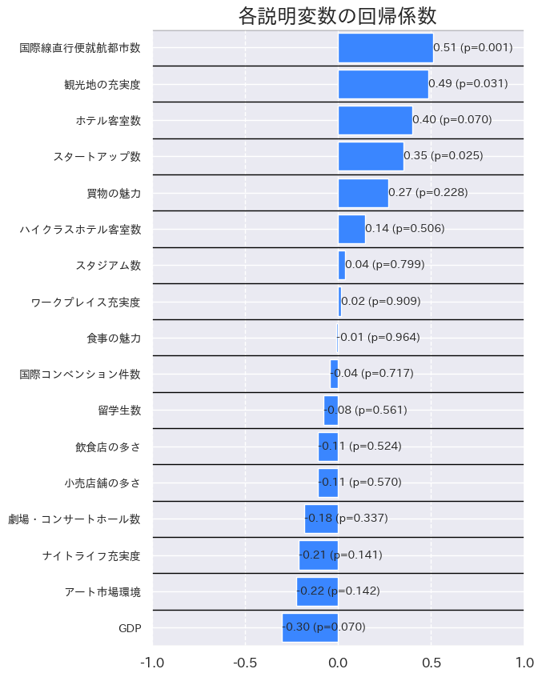

Tokyo Beyond 2050


Beyond 2050
線形回帰モデル
\( \text{y} = \theta_0 + \theta_1 \cdot x_1 + \theta_2 \cdot x_2 + \cdots + \theta_n \cdot x_n \)

相関係数が高く、統計的に有意と考えられる指標の絞り込み



回帰係数が高い指標（和集合）
| 分野 | 指標 |
|---|---|
| 経済 | 賃金水準 |
| 政治・経済・商機のリスクの低さ | |
| 研究・開発 | 留学生数 |
| スタートアップ数 | |
| 文化・交流 | アート市場規模 |
| 観光地の充実度 | |
| スタジアム数 | |
| ホテル客室数 | |
| ハイクラスホテル客室数 | |
| 買い物の魅力 | |
| 居住 | メンタルヘルス水準 |
| 小売店舗の多さ | |
| 環境 | 都市空間の清潔さ |
| 交通・アクセス | 国際線直行便就航都市数 |
| 自動車の移動速度 |
都市の魅力
2つの構成要素
普遍的な魅力
Functionality
固有の魅力
Identity
都市の魅力
普遍的な魅力
- Functionality -
- 経済
- 研究・開発
- 居住
- 環境（量）
- 交通・アクセス
固有の魅力
- Identity -
- 文化・交流
- 環境（質）